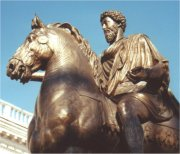
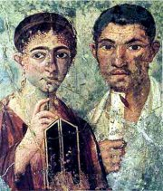

Největší rozsah římské říše za vlády císaře Trajána (117 n.l.)

|
ŘÍM
Římané byli hlavně válečníci a jejich legiím se podařilo dobýt obrovské území v Evropě, Africe i Asii. Římská kultura navazuje na etruskou a řeckou. Podoba římské demokracie je bližší současnému uspořádání než demokracie v řeckých městech. Řím měl instituce jako senát, existovala zde obdoba politických stran, svobodnými občany bylo stále více lidí. Rozhodující vliv si přesto zachovali velitelé vojsk.
Římská kultura byla zpočátku velmi závislá na řecké. Římané kopírovali řecké sochy, překládali řecké knihy a ztotožňovali své bohy s řeckými. I původní římská díla využívají řecké náměty.
Tragédie měst Pompeje a Herculaneum, která v roce 79 n.l. zničila náhlá erupce sopky Vesuv, znamenala pro archeology cenný zdroj poznatků o životě starých Římanů.
Kterým řeckým bohům a hrdinům odpovídají římské protějšky Juno, Diana, Minerva, Ceres, Vulcanus, Neptunus, Kupido, Furie, Proserpina, Hercules a Ulixes?
Další římští bohové dali jména planetám. Co o nich víš?
Někteří římští bohové se skrývají v názvech měsíců (leden až srpen). Pokus se je uhodnout na základě znalosti některého cizího jazyka. Co o nich víš?
|
Historie
V 8. stol. př.n.l. ovládali značnou část Itálie Etruskové. Roku 753 př.n.l. byl podle tradice založen Řím (nejprve království, po vypuzení Etrusků republika). V roce 272 př.n.l. ovládli Římané celý Apeninský poloostrov, v punských válkách (264-146 př.n.l.) porážejí Kartágo a postupně dobývají obrovská území v Evropě, Africe i Asii. Caesarův (†44 př.n.l.) adoptivní syn Augustus vyhlašuje principát (27 př.n.l.), později císař Dioklecián (284-305 n.l.) nastoluje dominát. Císař Konstantin Veliký (306-337 n.l.) podporuje křesťanství. V roce 395 se římská říše rozděluje na západní, která po opakovaných nájezdech barbarských kmenů zaniká (476 n.l.), a východní (pozdější Byzanc, zaniká až roku 1453 po vpádu Turků).
Akvadukt
|
Augustus a Maecenas
Za vlády císaře Augusta (63 př.n.l. až 14 n.l.), Caesarova adoptivního syna, ustávají věčné boje o moc a dochází ke stabilizaci římské říše. Díky tomu se může plně rozvinout římská kultura. Umělce, kteří podporovali Augustovu politiku, finančně podporoval bohatý občan Maecenas.

Mapa Aeneova putování z Troje do Latia

|
Vergilius: Aeneis
O válce zpívám a reku, jenž první z krajiny trojské
K italské připlul zemi, hnán osudem, k lavinským břehům,
Vyhnanec, dlouhý čas jej po zemích štvala i mořích
Božská moc: zlý Junonin hněv, jenž nedal se smířit.
Mnoho i trpěl válkou, než konečně založil město,
usídlil v Latiu bohy, pak povstal Latinský národ,
dávní praotci albští a římské vysoké hradby.
|
 Aeneis je římskou obdobou homérských eposů. Po pádu Troje hledá poražený hrdina Aeneas novou vlast. Na své pouti zažije řadu dobrodružství, z nichž je nejdůležitější jeho sestup do podsvětí, kde se dozví o budoucí slávě Říma. Jeho putování je plné nástrah bohyně Junony, ale Aeneas nakonec šťastně přistane nedaleko ústí řeky Tiber. Po vítězství nad králem Turnem získává ruku Lavinie, dcery krále Latina, naplňuje svůj Osud a stává se praotcem Římanů.
Aeneis je římskou obdobou homérských eposů. Po pádu Troje hledá poražený hrdina Aeneas novou vlast. Na své pouti zažije řadu dobrodružství, z nichž je nejdůležitější jeho sestup do podsvětí, kde se dozví o budoucí slávě Říma. Jeho putování je plné nástrah bohyně Junony, ale Aeneas nakonec šťastně přistane nedaleko ústí řeky Tiber. Po vítězství nad králem Turnem získává ruku Lavinie, dcery krále Latina, naplňuje svůj Osud a stává se praotcem Římanů.
Jiní ať kovové sochy, jak živoucí, jemněji tvoří –
budiž! – i z mramoru tvář, jak mluvící, dovedou vyvést,
jiní ať řeční lépe a oběh nebeských těles
umějí zobrazit hůlkou a určit východy hvězdné –
ty však, Římane, hleď, bys mocí národům vládl,
to bude umění tvé, dát pokoj světu a právo,
laskav k poddaným být, však odbojné rozdrtit válkou.
|
Vergilius nestihl epos, který má skoro 10 000 veršů, dokončit a na smrtelném loži žádal, aby byl zničen. Císař Augustus ho přesto nechal vydat, protože opěvoval velikost Říma.
|
Publius Vergilius Maro
(70-19 př.n.l.)

Vergilius byl autorem národního eposu Aeneis a básnických skladeb Bucolica (Zpěvy pastýřské) a Georgika (Zpěvy rolnické).
|
Ovidius

|
Ovidius: Proměny
Básnická skladba Proměny (Metamorfozy) líčí příběhy z řecké i římské mytologie, jejichž hlavním pojítkem je motiv proměny. Přibližně 250 bájí je rozděleno do 15 knih. Báseň začíná vznikem světa z chaosu a pokračuje přes potopu světa (Deukalion a Pyrrha), zrození heroů a mýty z různých řeckých měst až k trojskému cyklu. Další báje jsou římského původu (Aeneas, Romulus...). Dílo končí zbožštěním Julia Caesara a jeho proměnou v kometu.
|
Publius Ovidius Naso
(43 př.n.l. až 18 n.l.)
Ovidius nepatřil mezi oficiální básníky, kteří působili na dvoře císaře Augusta. Napsal knihy Proměny (Metamorphoses) a Kalendář. Jeho milostné skladby (Listy heroin, Lásky, Umění milovat) ovšem vzbudily u dvora takové pohoršení, že byl poslán do vyhnanství v Tomidě (dnešní Konstanca v Rumunsku) na pobřeží Černého moře. Zde strávil posledních 10 let svého života a napsal knihu Žalozpěvy (Tristia) a Listy z Pontu.
Nakresli ilustraci k Ovidiovým Proměnám.
Znáš jiné příběhy z antické mytologie o proměnách bohů a lidí?
|
Starověký Řím byl proslulý svými lázněmi, kde ctihodní občané trávili velkou část dne.
|
Ovidius: Umění milovat
Básnická skladba Umění milovat obsahuje podrobné rady milencům, jak si počínat v lásce, přičemž účel často světí prostředky... Tvoří ji tři části – Kde hledat ženy, Jak si lásku udržet a Rady ženám.
|
Básnířka z Pompejí
Které z Ovidiových rad lze použít i dnes?
Se kterými nesouhlasíš? Proč?
|
Poezie a próza
Nejvýznamnější antická literární díla byla veršovaná. Řekové i Římané používali ve svých básních časomíru (ve verších se pravidelně střídaly dlouhé slabiky s krátkými). Próza nebyla v umění tolik ceněna, ale přesto se používala. Setkáváme se s ní hlavně v antických románech.
Řečník Cicero
|
Petronius: Satirikon
Z románu se dochovalo jen několik zlomků. Jak už název napovídá, jedná se o satiru. Petronius si v ní vzal na mušku nešvary římské společnosti. Hlavní postavou je propuštěnec Encolpius, který se svými přáteli navštíví hostinu u Trimalchiona. To je rovněž propuštěný otrok, který zbohatl a rozhodl se vstoupit do vyšší společnosti. Jeho vychování ani vzdělání tomu ale neodpovídá a působí jako buran. Další zlomky líčí Encolpiovo setkání s básníkem Eumolpem a společnou cestu lodí, která ztroskotá. Eumolpus ve své závěti požaduje, aby případní dědici snědli po smrti jeho tělo...
Pokus se vysvětlit význam slova satira.
|
Gaius Petronius Arbiter
(†66 n.l.)
Petronius působil na dvoře císaře Nerona jako rozhodčí ve věcech umění. Když se tomuto šílenému císaři znelíbil, byl donucen spáchat sebevraždu. Stejný osud potkal známého filozofa a dramatika Senecu (†65 n.l.), který původně Nerona vyučoval.

Císař Nero
|
Cicero (106-43 př.n.l.)
Cicero proslul jako výborný řečník a autor spisů Řečnictví a O řečníkovi.
Zachovalo se jeho 57 projevů, především Čtyři řeči proti Catilinovi, na jejichž základě byl tento spiklenec popraven. Filipiky proti Marku Antoniovi se mu ovšem vymstily. Když se dostal k moci, pokusil se Cicero uprchnout do Řecka, ale na cestě byl zavražděn. Plutarchos si ho cenil více než Demosthena, protože prý podle svých slov i jednal.
|
Věda
Římská filozofie navazuje na tradici helénistických škol. Ke stoicismu se hlásil filozof a dramatik Seneca a císař Marcus Aurelius, který je autorem knihy Hovory k sobě. Opakem klidných a rozvážných stoiků byli epikurejci. K nim měli velmi blízko římští básníci Lucretius a Horatius, autor výroku Carpe diem! (Užívej dne!). Eklekticismus hledal ve všech směrech to nejlepší, hlásil se k němu řečník Cicero.
Významnými římskými historiky byli Livius, Tacitus a Josephus Flavius, který ve svých spisech Válka židovská a Židovské starožitnosti zachytil dějiny Židů.
Historicky velmi cenné jsou Caesarovy Zápisky o válce galské.
Stavitel Vitruvius napsal Deset knih o architektuře, v nichž popisuje projektování měst, stavbu různých budov i válečných strojů.
|
Marcus Aurelius (121-180 n.l.)

Císař Marcus Aurelius proslul jako vojevůdce i filozof (Hovory k sobě).
|
Jazyk a písmo

Ukázka z Ovidiových Proměn zapsaná na papyru
|
Jazyk a písmo
Římané mluvili latinsky. Dnes je sice latina mrtvým jazykem, ale díky vlivu římské říše se stala mluvená podoba latiny základem románských jazyků (italština, francouzština, španělština...). Z latiny vychází řada odborných termínů a používá se v lékařství i soudnictví. Znalost latiny byla dlouhou dobu součástí klasického vzdělání.
Římané si pro své potřeby upravili velká písmena řecké abecedy. Z jejich písma vychází současná latinka. K zápisu čísel používali nepraktický systém vybraných písmen (I, V, X, L, C, D, M).
Další autoři
Horatius: Satiry, Ódy, Listy (básnické sbírky)
Catullus (básník)
Iuvenalis: Satiry
Apuleius: Zlatý osel (fantastický román)
|
Latinské nápisy
|
Internetové stránky
Etruskové, Římané, umění
Pantheon, fotografie
Pompeje, fotografie
Pompeje

Nástěnná malba z Pompejí Terentius a jeho manželka zachycuje ženu, která píše na navoskovanou destičku.
|
Doporučená četba
Burian, Jan: Publius Ovidius Naso, Československý spisovatel, Praha 1975
Aeneas, převyprávěl V.Zamarovský, Albatros, Praha 1981
Aurelius, Marcus: Hovory k sobě, přel. R.Kuthan
Horatius, Quintus Flaccus: De arte poetica, O umění básnickém, přel. D.Svobodová, Academia, Praha 2002
Kuťáková, E., Marek, V., Zachová, J.: Moudrost věků, Lexikon latinských výroků, přísloví a rčení
Ovidius: O lásce a milování, přel. Mertlík, Svobodová, Svoboda, Praha 1990 (Lásky, Listy milostné, Umění milovat, Jak léčit lásku)
Ovidius: Proměny, přel. I.Bureš, Svoboda, Praha 1974
Petronius: Satirikon, přel. K.Hrdina, Svoboda, Praha 1971
Písně pastvin a lesů (Vergilius)
Plutarchos: Životopisy slavných Řeků a Římanů (2 díly), Odeon, Praha 1967
Quintilianus, Marcus Fabius: Základy rétoriky, přel. V.Bahník, Odeon, Praha 1985
Sienkiewicz, Henryk: Quo vadis, přel. O.Sojka (román o Neronovi)
Slovník latinských spisovatelů, Odeon, Praha 1984
Vergilius: Aeneis, přel. O.Vaňorný, Svoboda, Praha 1970
Zamarovský, Vojtěch: Dějiny psané Římem, Praha 1969
|
Připrav si referát o některé z uvedených knih nebo internetových stránek.
Hrdina Aeneas
Poznámka: latinská výslovnost se v zásadě neliší od české, pouze i nezměkčuje předchozí souhlásku – Petronius [-ny-], ae čteme jako e – Aeneis [en-], místo ti vyslovujeme ci – Horatius [-ci-] a c zůstává pouze před i,e – Cicero [cicero], jinak se čte k – Catullus [ka-].
|
|